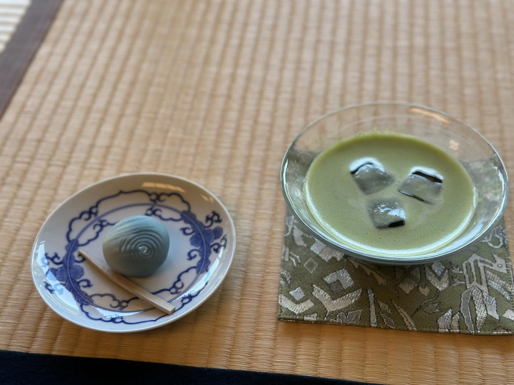
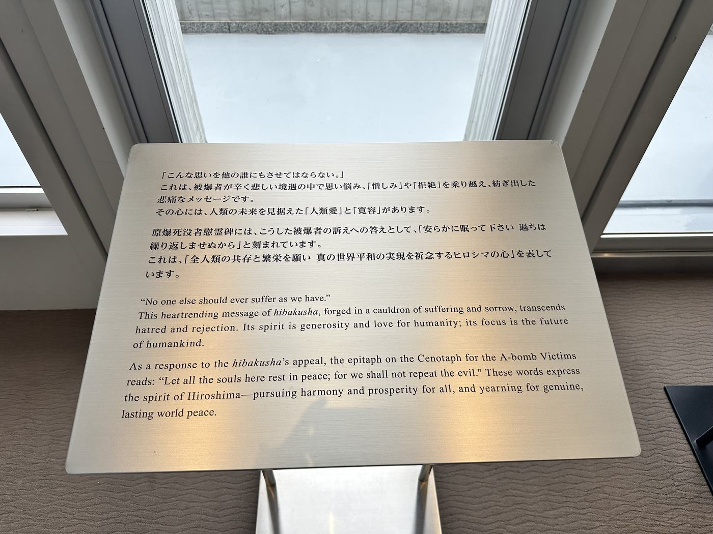
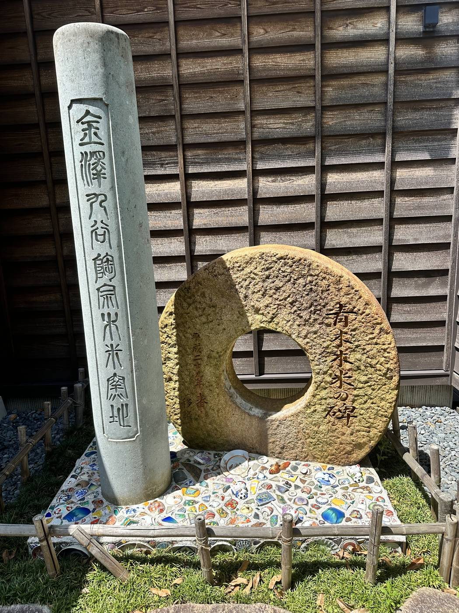

Region
Japan
Japan is one of Mirror Project’s seven interview regions. Kenroku-en in Kanazawa is one of Japan’s three great gardens, together with Kairakuen in Mito and Kōrakuen in Okayama. The Hiroshima Peace Memorial (Genbaku Dome) and Itsukushima Shinto Shrine on Miyajima have both been UNESCO World Heritage Sites since 1996.
Watch
Interviews
Interview videos from Japan will appear here when they are ready.
Photos from the trip
Still photographs from the Japan trip. Scroll sideways to see more.









Tech and human connection
Dawn Avatar Robot Café, Tokyo
OriHime robots greet guests at this café in Nihonbashi. They are remotely piloted by people who have difficulty going out, including people with disabilities.